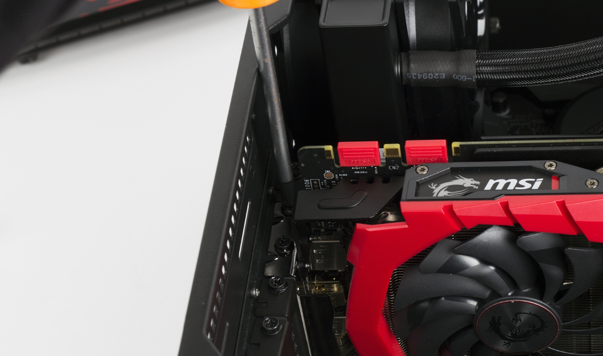

Шаг №1. Установка блока питания в корпус.
Чтобы в дальнейшем нам ничего не мешало установить БП, сделать это рекомендуется в самом начале. Тут всё просто - снимаем боковые крышки корпуса, устанавливаем БП сверху или снизу, в зависимости от расположения блока в вашем корпусе, и фиксируем его винтами, которые вы найдёте в комплекте к БП или корпусу. Поставить БП не той стороной у вас просто не получится, расположение отверстий на корпусе и резбы под винты на блоке совпадают только при установке последнего правильной стороной.
| Верхнее расположение БП | Нижнее расположение БП |
 |
Далее берём все кабеля в ахабку и выводим их на заднюю стенку корпуса через специально предназначенное для этого отверстие. (находится рядом с БП)
Попутно устанавливаем заглушку материнской платы в корпус. Заглушка идёт в комплекте с материнской платой.
Сразу же можем установить и вентиляторы для продува корпуса. Обычно делают так - один вентилятор ставится сзади на выдув, а два или три на передней панели либо снизу на вдув. Понять куда дует вентилятор довольно просто - на грани нарисована стрелочка, указывающая направление воздушного потока. Если же её нет, запоминайте следующее правило: вентилятор забирает вохдух со стороны лицевой его части, т. е. той где нет перемычек.
Шаг №2.
Тут нам нужно объединить такие элементы как материнская плата, процессор, оперативная память и кулер.
Берём паралоновй прямоугольник который обычно лежит в коробке под материнкой и кладём его на стол, сверху
кладём нашу плату.
Далее открываем сокет материнской платы и устанавливаем туда процессор. Ничего сложного тут нет, сверяем ключи на углу проца и углу сокета и аккуратно кладём наш проц в сокет. Если вы всё сделали правильно, то почувствуете как процессор как бы слегка провалился в сокет. Прикладывать усилия тут нельзя, вы можете погнуть ножки процессора, в случае с AMD, или ножки сокета, в случае с Intel. Вся процедура проводится плавно и аккуратно.
Закрываем сокет опустив рычаг.

Далее устанавливаем оперативную память, сперва открыв защёлки на слотах памяти на материнке. Здесь также смотрим на ключ (разрез) на контактах модуля памяти - он должен совпадать с перемычкой в слоте DIMM на плате, вставляем планки в слоты и равномерным усилием нажимаем на края планки, защёлки автоматически закроются зафиксировав модуль в слоте. Вставить память другой стороной у вас не получится фихически. Прикладывать сумасшедшие усилия здесь не требуется, но иногда встречаются платы ну с очень уж тугими слотами, и вот тогда приходится надавливать чуть сильнее, но опять же в меру. Вставлять планки в слоты необходимо либо через один, либо в слоты одинакового цвета. Но лучше посмотреть в инструкции к материнской плате, там точно будет указано каким образом ставить память.
И последнее в этом пункте - установкеа кулера. Если на пятке вашего кулера не нанесена заводская термопаста, то её необходимо нанести самостоятельно, ознакомиться с этим процессом вы можете тут. Так же не забудте снять пластиковую транспортировачную упаковку с пятки кулера, у новичков это довольно частая ошибка.
Установка кулера с креплением на винтах
-
С обратной стороны платы устанавливается бэкплейт. Важно убедиться, что сторона пластины, обращенная к материнке
, имеет диэлектрический слой или выполнена из непроводящего электричество материала.
- На процессор наносится термопаста.
-
Кулер устанавливается на кристалл процессора. При этом важно следить за совпадением элементов резьбового соединения.
-
Избегая перекосов, затягиваются винты
Установка кулера на фиксаторах
Установка такого кулера предельно проста:
- Нужно убедиться, что все фиксаторы находятся в открытом состоянии, после чего кулер располагается на процессоре. При этом контролируется совпадение фиксаторов с крепежными отверстиями на материнской плате.
-
Фиксаторы поочередно нажимаются. Чтобы избежать перекосов конструкции, нажимать их нужно по диагонали относительно друг друга.
Установка кулера AMD
Такой тип крепления используется исключительно на материнских платах, работающих под управлением процессора AMD.
Для установки такого кулера необходимо произвести следующие действия:
-
Свободная петля фиксатора одевается на специальный выступ «кроватки» процессора.
- Нажмите на скобу с другой стороны кулера и оденьте её на выступ.
С креплениями такого типа у новичков часто возникают проблемы, пэтому если у вас не получается одеть вторую петлю на выступ то здесь вы можете ознакомиться с более подробной инструкцией установки кулера данного типа.
Если вы преобрели башенный кулер, то его вентилятор должен быть направлен в сторону передней панели. А если у вас башенный кулер и процессор Intel, то о его установке смотрите здесь.
Остаётся лишь подключить провод питания вентилятора кулера в разьём материнской платы, он имеет маркеровку sys_fan, cpu_fan либо cha_fan.
Если у вас есть накопитель M2 то его можно так же установить на данном этапе. Поставить его предельно просто - вставляем накопитель в разьём и затягиваем винт. при наличии ставим радиатор.
Шаг №3.
Получившуюся конструкцию необходимо установить в корпус.
Первым делом кладём корпус набок. Есле в нём уже установлены антистатические стойки, то необходимо убедиться что их расположение совпадает с крепёжными отверстиями на материнской плате, иногда бывает так что в корпусе вкручено больше стоек чем нужно, в результате чего одна или несколько стоек упераются в текстолит материнки, что может привести к замыканию и её выходу из строя. Если же стойки поставляются отдельно от корпуса, то необходимо вкрутить их самостоятельно, опять же в соответствии с отверстиями на вашей материнской плате. В корпусах так же можно встретить маркеровки мест крепления для различных форм-факторов плат.
Убедившись что всё совпадает, ставим материнскую плату на стойки и прикручиваем её винтами, которые обычно идут в комплекте с корпусом.
Зафиксировав материнку в корпусе, подключаем переднюю панель. Сначала, пользуясь технологическими отверстиями корпуса, необходимо провести провода передней панели через заднюю стенку корпуса к месту их подключения на материнской плате. На всех материнских платах коннекторы подключения находятся в правом нижнем углу, каждый разъём подписан, выше или ниже предполагаемого месторасположения подключения.
Берём в руку провода и подключаем их в соответствии с маркеровками на плате. Рядом находится разъём для подключения USB-3. Если же маркеровок на месте подключения вы не обнаружили, то информацию о подключении вы можете найти в инструкции к материнке или на сайте её производителя.
Шаг №4. Установка накопителей.
Тут всё просто. Жесткие диски формата 3.5 ставим в предназначенную для них корзину, 2.5 дюймовые SSD обычно крепятся на стенке у передней части на внешней или внутренней стороне, лично я предпочетаю ставить их внутри, так как довольно часто провожу манипуляции с накопителями. Обязательно фиксируйте накопители винтами.
Подключаем накопители к материнской плате используя SATA кабели, парочка обычно идёт в комплекте с материнкой.
Шаг №5. Установка видеокарты.
Сначала снимаем две заглушки с задней стенки корпуса. Чаще всего графический адаптер устанавливается в первый (самый ближний к сокету) разъем PCI Express x16. Далее фиксируем видеокарту к курпусу винтом.
Шаг №6. Подключение питания.
Теперь мы будем заводить провода БП, которые мы в самом начале вывели на заднюю внешнюю стенку, обратно внутрь. Делать мы это будем через
технологические отверстия корпуса, которые находятся рядом со всеми разъёмами питания. Таким обрахом, внутри корпуса у нас будет минимум проводов
.
Для начала подключим самую длинную гребёнку - 24pin коннектор питания материнской платы, стоит отметить, что подключить кокой-либо коннектор
не той стороной у вас не получится, так как и на коннекторах и на разъёмах материнки присутствуют ключи. Далее ищем 4+4pin или же 8pin коннектор
с маркеровкой "CPU", его необходимо подключить в 8 пиновый разъём рядом с процессором. Затем берём кабель с коннекторами питания SATA и зопитываем им
наши накопители. По необходимости, если на материнской плате не хватило разъёмов для питания всех ваших вентиляторов, вы можете подключить часть из
них напрямиую к БП через Molex. И наконец берём кабель 6+2pin с подписью GPU и запитываем им вашу видеокарту, разъём питания которой может быть либо 6
либо 8pin.
Шаг №7. Первое включение.
И так без лишних интриг подключаем переферию к нашему системнику и воткнув шнур питания в розетку жмём на кнопку включения, если всё закрутилось засветилось и на мониторе появился логотип материнской платы, то я вас поздравляю, у вас всё получилось, можете отключать всё, в том числе системник из розетки, фиксировать провода на внешней задней стенке или же сложить их в в спциально отведенный короб, если таковой имеется. Следующим шаком для вас будет установка ОС .
Если же по какой-то причине системник не стартанул, или не выводит изображение, ознакомтесь с возможными причинами.